Every photo you take does one of two jobs. It either tells the office what's on site so we can order parts, file warranty and bill right, or it goes on the website and sells the next job. Here's what each one needs to look like.
These never go public. They're how we order the right part the first time, file the warranty claim, and prove what we did.
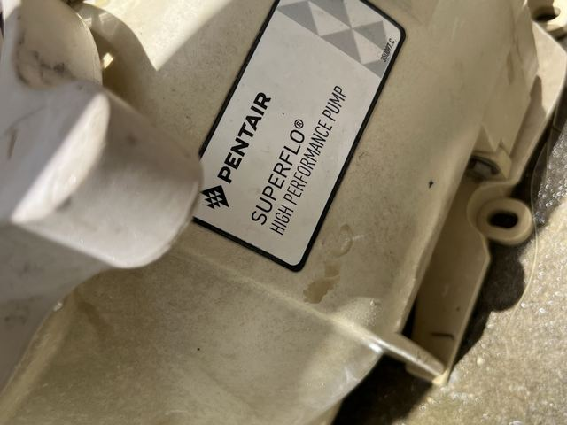
Angled, half cut off. We can read the brand and nothing else. No model, no serial, no claim.
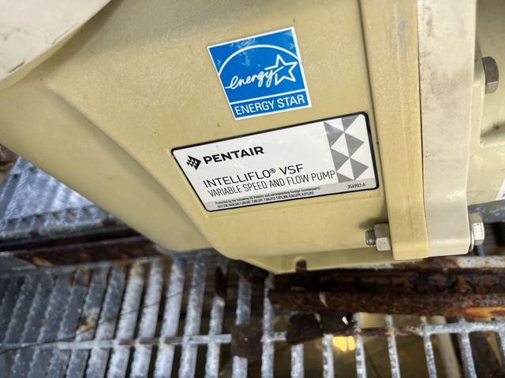
Straight on, fills the frame, every line readable. We can order parts and file warranty from this one photo.
Pump, filter, heater, salt cell, automation board, cleaner. One label photo each, every time you're at a new pool. Wipe the label first if it's dirty.
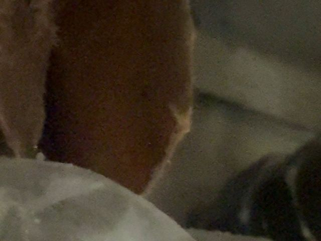
Nobody can tell what this is. If it's blurry on your screen, it's blurry on ours. Take it again.
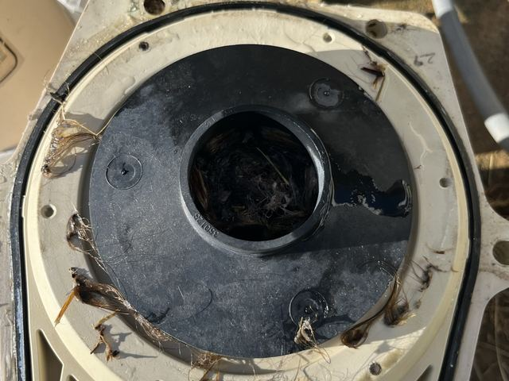
You can see exactly why the pump quit. That's the photo that goes on the invoice and ends the argument.
Before you touch it: shoot what you found. After: shoot the new part in place. Old part next to new part is even better.
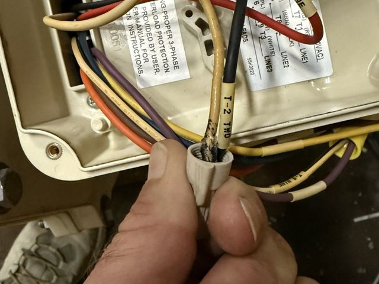
Wires and a thumb. We can't tell what panel it is or what it's doing.
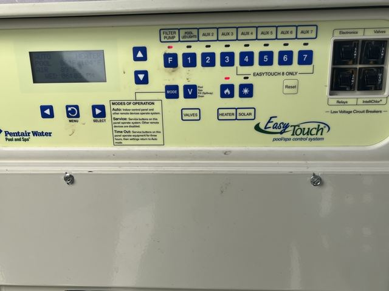
Whole panel, display readable, breakers in frame. Any error code or status is right there.
If the screen shows a code, get close enough to read it, then step back for the whole panel. Two photos.
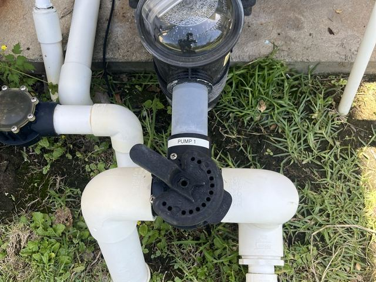
One valve and some weeds. Is there a heater? A salt cell? What size filter? Can't tell.
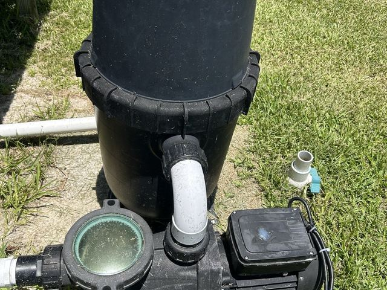
Back up until every piece of equipment is in the frame. Now the office knows what's there before anyone quotes anything.
Ten feet back, square to the pad. This one shot saves a second trip more than any other.
These go on liquidassetsms.com and our socials. Only take them when the pool looks good. Thirty extra seconds here is the difference between a photo we can use and one we can't.
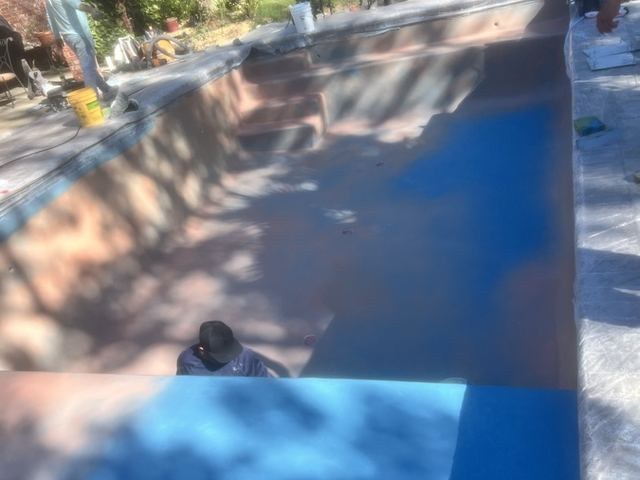
Tilted and tall. The water looks like it's running out of the pool.
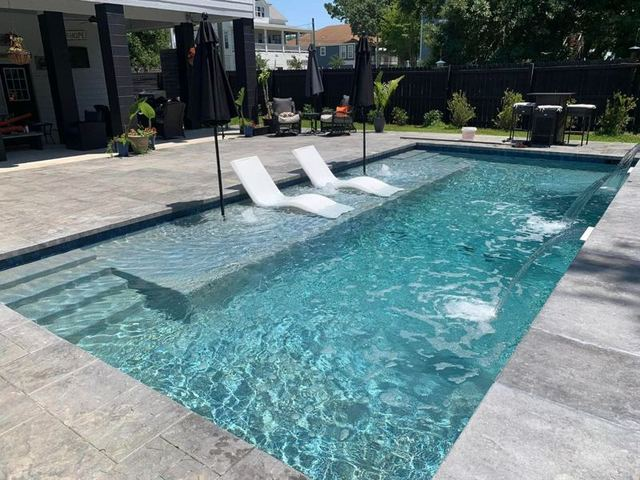
Landscape, level, shot from a corner so you see two sides of the pool and the deck.
Corner of the deck, phone at chest height, waterline straight across. That's the shot.
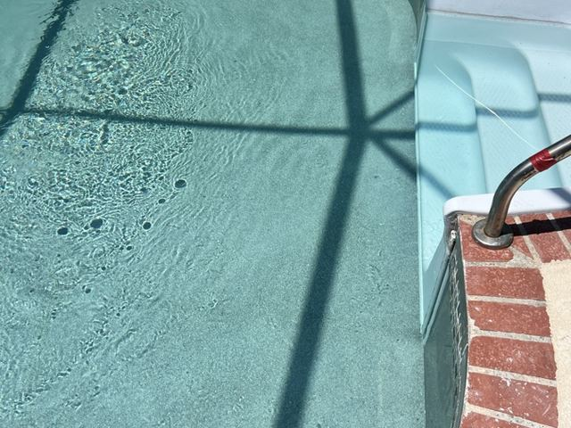
Noon sun, hard shadows across the water, glare off the surface.
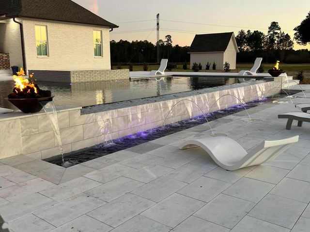
Late light, fire bowl on, water lights on. This one sells pools.
There at dusk and the lights work? Turn them on and take the picture. Every time.
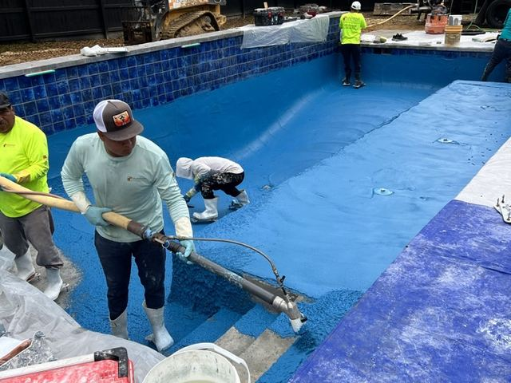
Crew, buckets, cooler. We can't put people on the website without asking them.
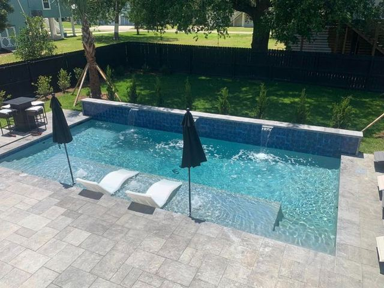
Pull the vacuum, move the jugs, kick the hose out of frame, then shoot.
Floats, dog toys, the customer's kids, your truck: all out of the frame. Before and after from the same corner, same height.
Liquid Assets MS · Questions, ask Scott. Photos go on the Skimmer work order the same day.